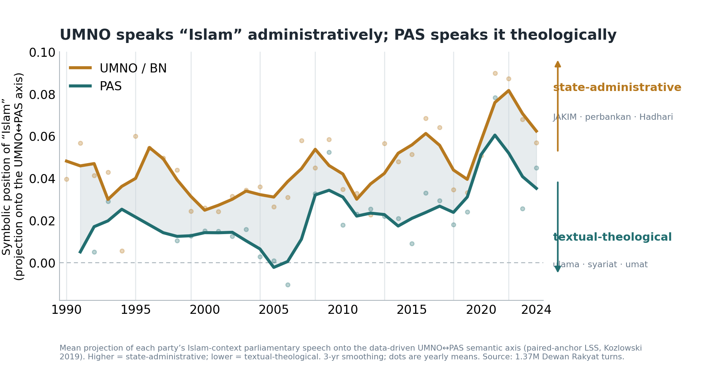
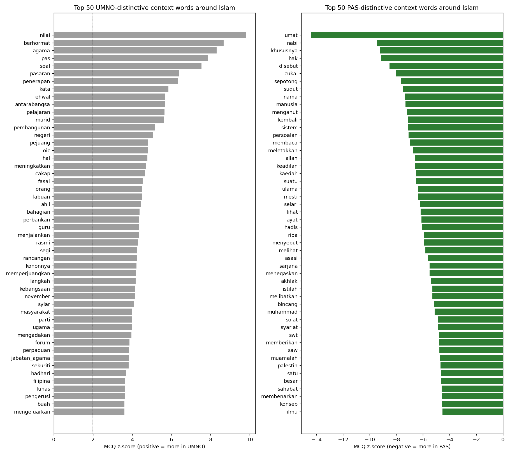
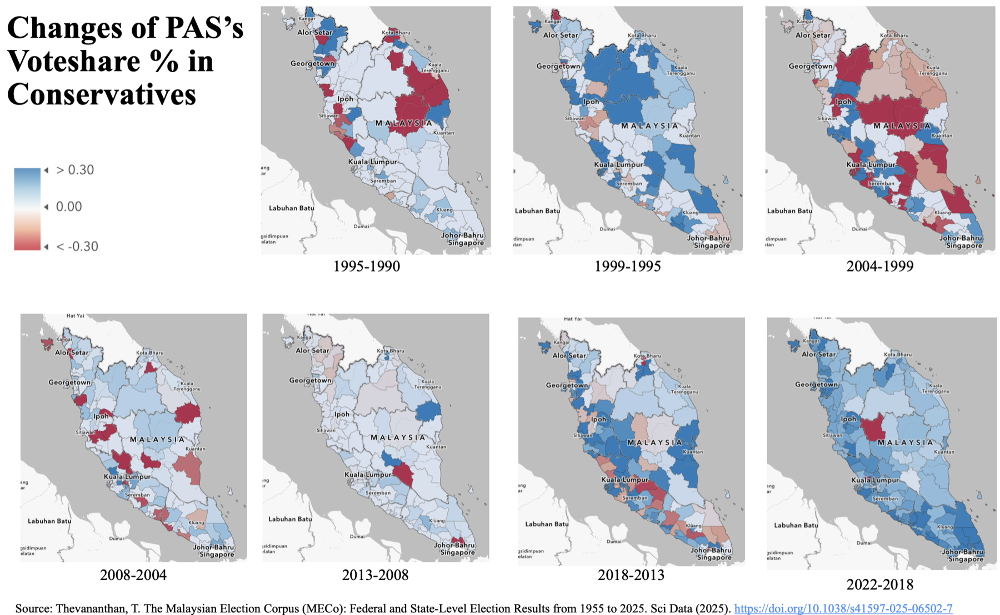
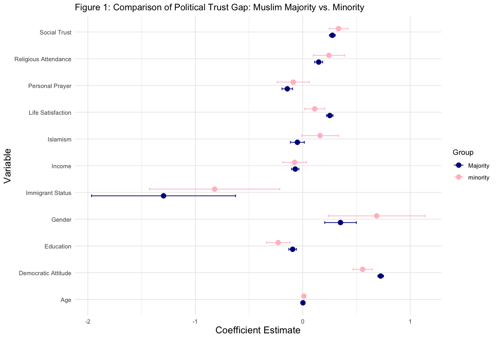
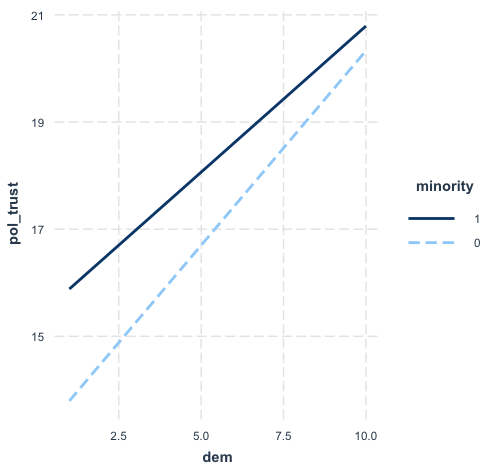

Research
Here are some of my recent and ongoing projects:
- When Co-optation Backfires: The Islamization Race in Malaysia (1980s–1990s) (for APSA 2026 in Boston, MA)
- Abstract
- Keywords
- Islamic Labs? Sub-National Islamization in Malaysia and Its Spillover Effects (for MPSA 2026 in Chicago, IL)
- Abstract
- Keywords
- Trust in Government in Countries with Muslim Minorities (for MPSA 2025 in Chicago, IL)
- Abstract
- Keywords
- State Capacity, Accountability, and Political Trust in MENA (for MPSA 2025 in Chicago, IL)
- Abstract
- Keywords
- Malaysia's Moderate Diplomacy and the Shift Towards an Islamic State (for EWIS 2025 in Krakow, Poland)
- Abstract
- Keywords
How do authoritarian parties respond to ideological challenges posed by religious opposition? While existing literature predominantly focuses on repression or concession, it rarely explores mechanisms of mimicry at the discursive level. Using Malaysia as a case study, this article investigates why the United Malays National Organisation (UMNO)—a long-ruling party championing Malay supremacy—failed to neutralize the threat of the Pan-Malaysian Islamic Party (PAS) through co-optation, but instead catalyzed the Islamization of state institutions. I argue that moral panic from the middle class and the global Islamic revival compelled UMNO to engage in reclaiming/redefining national Islam. By attempting to contest legitimacy through replicating PAS's religious rhetoric, this strategy resulted in a structural convergence of discourse between the two parties. Employing a text-as-data approach on parliamentary debate records, the Hansard, from 1979 to 1998, this study calculates the cosine similarity of the two parties' political rhetoric within an Islamic subspace. Preliminary results indicate a discursive convergence emerging since early 80s. This confirms that while authoritarian parties may proactively appropriate a competitor's language for survival, this strategy ultimately creates an irreversible space for Islamic expansion within the state apparatus.
co-optation, Islamization, authoritarian resilience, text-as-data, discursive convergence


Why was PAS able to ride the anti-UMNO backlash in the 2022 "Green Wave" even when UMNO's material co-optation still appeared intact? This paper leverages constituency-level data from Malaysia's 15th general election (GE15), combining Ecological Inference with a Spatial Durbin Model (SDM) to estimate Malay vote defection from UMNO/BN to PAS/PN and to trace how this surge diffused in geographic space. The results show that digital penetration amplifies defection only where UMNO's local machinery has already thinned, supporting a conditional "digital magnification" mechanism rather than a generic "youth or technology" story. Substantively, UMNO's long-standing strategy of fusing material patronage with a bureaucratized Islamic apparatus built a durable yet spatially uneven firewall, while PAS's pondok and mosque-based networks accumulated autonomous symbolic capital as a more credible Islamic pole outside the state. Empirically, the sharpest breakthroughs did not occur in PAS's traditional heartland but in distant, UMNO-dominated urban constituencies where frustration with the moral bankruptcy of official Islam had quietly accumulated and where loyalty could be sustained only through material side-payments; a large and highly significant spatial lag term further reveals strong contagion, indicating that the Green Wave was not an aggregation of isolated upsets but a chain reaction of reverse diffusion enabled by digital time-space compression. Theoretically, the paper bridges co-optation and Islamization-race scholarship with work on digital mobilization and diffusion, showing how bureaucratic co-optation of religion generates a moral deficit that, under conditions of digital time-space compression, allows peripheral Islamic symbolic capital to spearhead a conservative realignment and a delayed authoritarian breakdown from the periphery back to the core.
Green Wave, co-optation, digital space-time compression, reverse diffusion, political Islam

For Muslims, completely separating religion from the public sphere is challenging. This means that Muslims often expect the government to integrate Islamic law, customs, and various aspects of their way of life. In countries where Muslims are the majority, the existence of an Islamic government is generally considered normal. However, in countries where Muslims are not the majority but still constitute a significant portion of the population, are Muslims satisfied with government governance? This study, based on data from the World Values Survey, examines two main hypotheses: the stronger the religious devotion of Muslim minorities, the lower their trust in government; and the lower the trust Muslim minorities have in government, the stronger their belief that the government should enhance religious governance.
This research aims to reinterpret the perspectives of Muslim minorities towards majority rule in modern democratic states. Using cross-sectional survey regression analysis, I explore the factors that influence political trust among Muslim minorities in minority-status countries.
Muslim minorities, majority rule, political trust, religious governance


with Seng-Yee Sin and Min-Hua Huang
The Middle East and North Africa (MENA) region has seen a resurgence of autocratization in the years following the Arab Spring, with many countries now under leaders who have held power for over a decade, such as Morsi in Egypt, Erdoğan in Turkey, and Saied in Tunisia. In the face of this renewed autocratization, how do the people of the MENA region—who once demanded democratization—feel about the increasingly authoritarian nature of their political systems? Do citizens hold authoritarian governments accountable for economic failures by decreasing their trust in political institutions? This article explores why some countries maintain stable authoritarian regimes, while others struggle with unstable democracies, by considering two key moderating factors: state capacity and democratic quality, including representativeness, accountability, and effectiveness. This thesis argues that when state capacity is high, this autocratization brings a decline in political trust; where state capacity is low, autocratization facilitates the centralization of resources and the establishment of order, and the decline in political trust does not necessarily exist, yet allows authoritarian governments to obtain a higher popular mandate. In sum, this paper aims to explain the persistence of stable authoritarianism and the instability of democratic regimes in the post-Arab Spring era through the lens of public accountability.
Autocratization, Accountability, State Capacity, Economic Failure, MENA
with Hung-lin Yeh
Since Mahathir Mohamad's tenure as Prime Minister (1981–2003), Malaysia has significantly elevated its diplomatic standing under the concept of Moderate Diplomacy. This approach has positioned Malaysia as an influential actor in Middle Eastern affairs and among Islamic countries while maintaining amicable relations with Western nations through its image as a Muslim-majority secular state. However, as Malaysia's engagement with the Islamic world has deepened under the framework of Moderate Diplomacy, mainstream public opinion and political parties have increasingly shifted towards supporting the implementation of Islamic law and the establishment of an Islamic state (Negara Islam). This trend has gradually challenged the constitutional foundation of Malaysia as a secular state. This study argues that while Malaysia's Moderate Diplomacy has expanded its influence within the Islamic world, the broader Islamic revivalist movement has contributed to ideological conflicts with Western countries and intensified domestic political contestation. Opposition parties advocating for Islamization have increasingly challenged the secular ruling establishment. As a result, Malaysia is undergoing a gradual transformation from a secular state towards an Islamic state paradigm, shaped by both international geopolitical dynamics and domestic political struggles.
Moderate Diplomacy, Negara Islam, Malaysia, Religious Shift, Southeast Asia